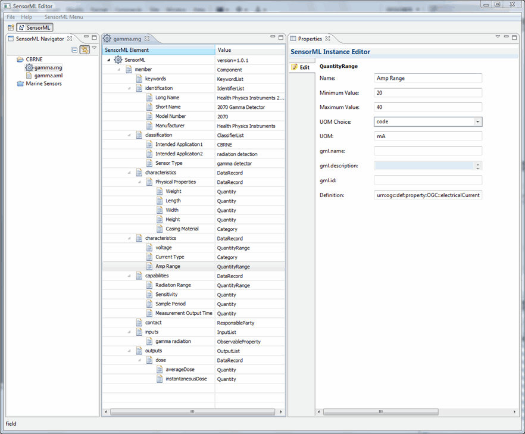

This project provides an example of a Chemical, Biological, Radiation, Nuclear, and Explosive detector. This projects SensorML description is of a Gamma Detector HPI 2070. The full description can be downloaded from:
http://vast.uah.edu/downloads/sensorML/v1.0/examples/sensors/Gamma_2070.xml
